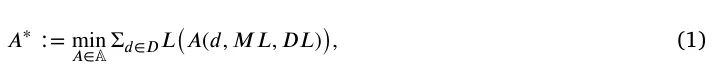
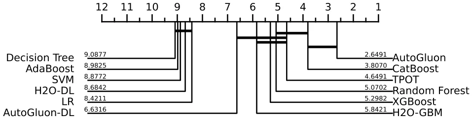
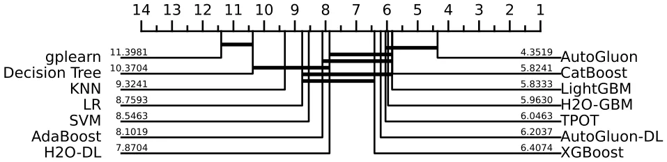
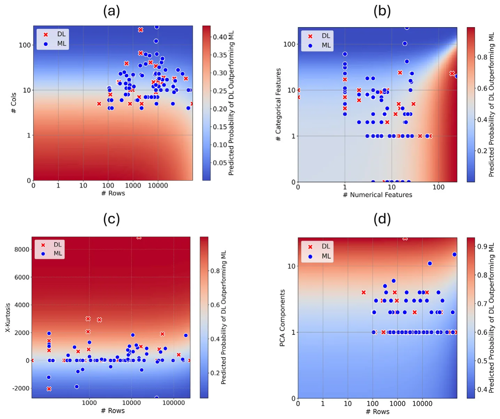
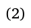
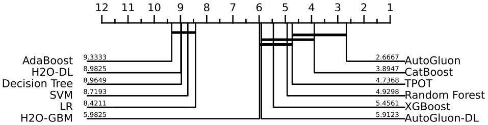
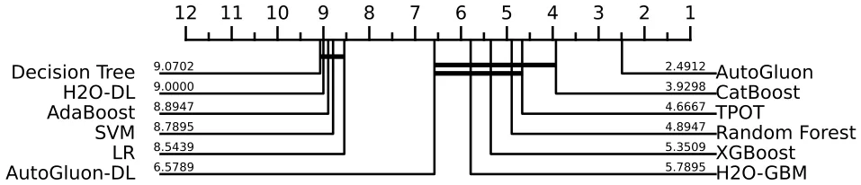
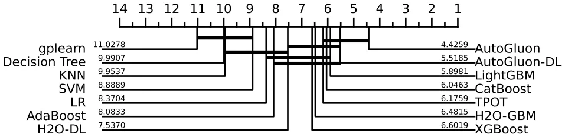
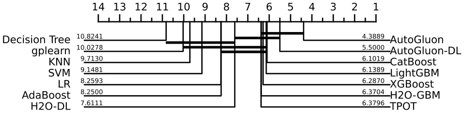

On this page
- Abstract
- 1. Introduction
- 2. Related work
- 3. Experimental setup
- 3.1. Datasets
- 3.2. Machine learning and deep learning models
- 3.3. Evaluation strategy
- 3.4. Meta-analysis profiling
- 4. Results
- 4.1. Model ranking
- 4.2. Meta-analysis profiling
- 5. Discussion
- CRediT authorship contribution statement
- Declaration of competing interest
- Appendix A. Supplementary material
- A.1. Description of models
- A.2. Meta-learning features
- A.3. Additional results
- A.4. Synthetic datasets analysis
- A.5. Computer resources
- Appendix B. Supplementary data
- Data availability
- Article notes
- References
Abstract
The analysis of tabular datasets is highly prevalent both in scientific research and real-world applications of Machine Learning (ML). Unlike many other ML tasks, Deep Learning (DL) models often do not outperform traditional methods in this area. Previous comparative benchmarks have shown that DL performance is frequently equivalent to or even inferior to models such as Gradient Boosting Machines (GBMs). In this study, we introduce a comprehensive benchmark aimed at better characterizing the types of datasets where DL models excel. Although several important benchmarks for tabular datasets already exist, our contribution lies in the variety and depth of our comparison: we evaluate 111 datasets with 20 different models, including both regression and classification tasks. These datasets vary in scale and include both those with and without categorical variables. Importantly, our benchmark contains a sufficient number of datasets where DL models perform best, allowing for a thorough analysis of the conditions under which DL models excel. Building on the results of this benchmark, we train a model that predicts scenarios where DL models significantly outperform alternative methods, considering only datasets where the performance difference between the two groups is statistically significant. This filtering yields 36 datasets out of the original 111. On this subset, our model achieves 92 % accuracy. We present insights derived from this characterization and compare these findings to previous benchmarks.
1. Introduction
Machine learning (ML) has long been considered superior to deep learning (DL) when it comes to handling tabular data [1–3], a common data format in many real-world applications and fields like medicine [4– 6], economy [7,8], and operations [9,10], to name a few. Nonetheless, this generalization does not hold universally [11]. While traditional ML algorithms, such as Random Forest [12] and XGBoost [13], often excel in this domain, there are scenarios where DL models outperform ML methods, challenging the prevailing notion [11]. Understanding the conditions under which DL models can surpass ML methods on tabular data is crucial for practitioners seeking to leverage the full potential of these advanced techniques.
Prior benchmarks have consistently shown that ML models— particularly tree-based ensembles—tend to outperform DL models on tabular data. For example, Grinsztajn et al. demonstrated that XGBoost consistently outperforms various DL architectures across multiple classification and regression datasets [1]. Shwartz-Ziv and Armon further
- ∗ Corresponding author.
confirmed that even advanced DL models like TabNet fail to surpass traditional ML methods in real-world tabular tasks [2]. Similarly, McElfresh et al. conducted an extensive comparison over 176 datasets and found that tree-based methods not only outperform DL models in accuracy but also require less computational time [14]. These studies highlight the average underperformance of DL but do not systematically identify the dataset characteristics that drive these results. Despite extensive research, the specific conditions under which DL models outperform traditional ML models on tabular data remain insufficiently understood. In particular, it is still unclear which measurable statistical properties of a dataset can reliably predict whether DL or ML will yield better performance. While most studies agree that DL tends to underperform on average, they stop short of identifying the scenarios where DL holds a clear advantage.
In this paper, we aim to fill this gap by conducting an extensive benchmark study involving 111 datasets encompassing both regression and classification tasks. We evaluate 20 different model configurations, 0925-2312/© 2025 The Author(s). Published by Elsevier B.V. This is an open access article under the CC BY license ( http://creativecommons.org/licenses/by/4.0/ ).
including 7 DL-based models, 7 Tree-based Ensemble models (TE), and 6 classical ML-based models, to ascertain their performance on tabular data. Based on these results, we adopted a meta-learning approach, profiling the properties of datasets where DL outperforms ML models. While our results show complex patterns, we found that DL models generally outperform ML models on datasets with few rows, many columns, and high kurtosis. We also find that the gap between the two groups is smaller for classification tasks compared to regression tasks. Our key contributions are:
- Conducted an extensive and diverse benchmark involving 111 datasets encompassing both regression and classification tasks.
- Evaluated the performance of 20 different model configurations, including 7 DL-based models, 7 tree-based ensemble models (TE), and 6 classical ML-based models.
- Identified dataset characteristics, such as small number of rows and high kurtosis, that favor DL models over other ML models.
- Trained a meta-learning model to predict whether DL models will outperform ML models, achieving 92 % accuracy (AUC 0.91).
- Presented explainable models, namely logistic regression and symbolic regression, which predict where DL models may perform better than alternative models.
- Provided detailed insights into the comparative performance of DL and ML models on a diverse set of tabular datasets.
The remainder of this paper is structured as follows: Section 3 describes the datasets and methodologies used in our benchmarking experiments as well as the evaluation strategy and profiling method. In Section 4, we present our experimental results. Finally, Section 5 discusses the applicative outcomes of these findings and suggests promising future research directions.
2. Related work
Several benchmarking studies have attempted to compare the performance of ML and DL models across various types of data, in general [15–17], and for tabular data, in particular [18]. For instance, [11] proposed the TabNet model, a DL model specifically designed to handle tabular data, and showed competitive performance against traditional ML approaches.
Grinsztajn et al. [1] used 45 tabular datasets from various domains (mainly from OpenML [19]) with heterogeneous columns, fewer than 500 columns but over 3000 rows with at least ten times more rows than columns, no time-series data, and without deterministic target column (like poker games’ data). The authors removed rows with missing data, used one-hot encoding [20] for categorical columns, and for regression cases applied a log transformation to the target variable. Based on these settings, the authors compared MLP [21], ResNet [22], FT transformer [23], and SAINT [24] for the DL models and the RF [12], XGBoost [13], histogram-gradient boosting tree [25], and gradient boosting tree [26] for the ML models. The authors showed that XGBoost outperformed all DL models for both classification and regression tasks while demonstrating that tuning hyperparameters does not enable DL models to outperform the ML models. They also suggested that DL models are challenged by uninformative features.
Similarly, [2] used 11 tabular datasets with both classification and regression problems with 10–2000 columns and between 7000 and a million rows. The authors performed standardization (aka z-score normalization) of each feature in each dataset to have a mean of zero and a standard deviation of one. The authors took into consideration the XGBoost model as a representative of the ML models, four DL models including TabNet, and three ensemble models of the DL model (with and without XGBoost). The authors concluded that the DL models underperform compared to the ML models while an ensemble combining both model types produces better results, on average. McElfresh et al. [14] used 176 classification datasets from OpenML and CC-18 and 19 algorithms including 11 DL models and 8 ML models [27]. The authors found that, on average, CatBoost [28] and XGBoost outperformed the other models while also being an order of magnitude more computationally efficient. The authors used the PyMFE [29] to compute a feature vector for each dataset and used it to analyze the properties in which DL models outperform ML models, on average, finding that irregular, datasets with a large number of rows, and a high ratio of size to number of features actually decrease the DL models’ performance. Ye et al. [30] compared 300 datasets including both classification and regression tasks from multiple domains further supporting the conclusion that, on average, tree-based ML models outperform DL models.
While several studies included some datasets with categorical features, few explicitly analyzed or discussed their impact on model performance. In most benchmarks, datasets containing categorical variables were underrepresented, with the median number of categorical features typically being zero or one (see Table 1). In our selection process, we prioritized datasets containing categorical features. Categorical features are prevalent in real-world datasets and pose unique challenges, often necessitating specific preprocessing and modeling approaches. Ensuring their inclusion allows our benchmark to accurately reflect real-world complexities and facilitates an assessment of how well different models handle such features. Moreover, we ensured diversity in dataset difficulty, with some datasets being relatively easy to predict and others presenting greater challenges, reflected in lower model performance. This varying degree of difficulty ensures that our benchmark can comprehensively evaluate and differentiate model performance across simpler as well as more challenging predictive tasks. None of the datasets in this benchmark allowed a perfect prediction with all models. In Table 1 we compare the characteristics of our datasets with previous works.
3. Experimental setup
In this section, we formally outline the experimental setup used to explore when DL models outperform ML models for tabular data. Initially, we present the datasets included in the analysis. Afterward, the ML and DL models considered for the analysis are introduced, followed by the evaluation strategy for both the classification and regression tasks. Finally, the proposed profiling and meta-analysis identify which datasets DL models produce comparably better results than ML models.
3.1. Datasets
In order to create a diverse and comprehensive benchmark for tabular datasets, aiming to provide insights into the scenarios where DL models outperform ML models, we incorporated a wide array of datasets exhibiting considerable variability and diversity of real-world tasks and characteristics. The benchmark includes datasets for both regression and classification tasks sourced from various domains such as economics and medicine to ensure relevance across different application areas. Additionally, we selected datasets of varying sizes in terms of both the number of rows (43–245,057) and columns (4–267), which are known to be crucial to the performance of ML and DL models, from previous studies.
The dataset selection process was as follows: We first included all 20 regression datasets from the benchmark published by Conrad et al. (2022) [31], without filtering, in order to balance the representation of regression and classification tasks. This is particularly important as many previous benchmarks tend to emphasize classification, while regression remains underexplored despite its practical relevance. The remaining datasets were primarily collected from OpenML, with a small number obtained from Kaggle. OpenML provides a large and accessible repository of datasets. We searched OpenML using keywords such as “regression”, “classification”, and “tabular prediction”, and selected datasets that did not contain missing values and were below 1 million rows and columns, to ensure feasibility of model convergence. This approach follows the precedent of prior benchmarks, such as Grinsztajn et al. [1], which impose size limits to maintain tractability. Our selection thus reflects both variety and practical considerations related to model training and evaluation.
| Study | # Models | #Classification | #Regression | Median dataset | Median # | Median # of | Meta- |
|---|---|---|---|---|---|---|---|
| datasets | datasets | size | features | categorical | analysis | ||
| [1] | 7 | 22 | 33 | 17k | 13 | 1 | No |
| [14] | 12−19 * | 176 | 17 | 2k | 21 | 0 | Partial ** |
| [2] | 6 | 9 | 2 | 11k | 32 | 1 | No |
| [3] | 19 | 4 | 1 | 20k | 21 | 2 | No |
| [30] | 5 | 181 | 119 | 12k | 21 | 1 | No |
| Ours | 20 | 54 | 57 | 5k | 13 | 4 | Yes |
* 12 models for regression datasets, 19 models for classification datasets. ** [14] examines the effect of several meta-features, but does not present a predictive model for DL advantage over ML.
| Variable | Mean | STD | Min | 25 % | Median | 75 % | Max |
|---|---|---|---|---|---|---|---|
| Number of rows | 18,576 | 39,874 | 43 | 673.75 | 4720 | 14,057.5 | 245,057 |
| Number of columns | 24.16 | 40.53 | 4 | 8.75 | 12.5 | 22.25 | 267 |
| Number of numerical columns | 14.25 | 30.21 | 0 | 3 | 7 | 17 | 247 |
| Number of categorical columns | 9.91 | 24.76 | 0 | 1 | 4 | 9 | 231 |
| Kurtosis | 348.01 | 1129.66 | −2711.83 | −0.31 | 6.44 | 684.99 | 8901.75 |
| Average correlation between features | 0.08 | 0.12 | −0.16 | 0.01 | 0.06 | 0.14 | 0.62 |
| Average entropy | 7.70 | 2.29 | 2.45 | 6.07 | 7.96 | 9.33 | 14.17 |
| Average Pearson to target feature | 0.11 | 0.10 | −0.19 | 0.04 | 0.09 | 0.18 | 0.44 |
Overall, we included 111 datasets in this study: 57 regression datasets and 54 classification datasets. Table 2 summarizes the main parameters of the datasets. The full table of datasets is presented in the appendix. All datasets can be freely accessed online: 84 (76 %) of the datasets were obtained from OpenML; an additional 20 (18 %) regression datasets were obtained from a Materials Science regression benchmark [31], and 7 (6 %) additional datasets were obtained from Kaggle. We also provide an analysis of additional synthetic datasets in the appendix.
3.2. Machine learning and deep learning models
We use 20 models in total to capture a representative set of algorithms from the different groups for our analysis. These models are mainly adopted from previous benchmarking studies and due to their overall popularity [1,14]. The models were divided into TE models, DL models, and other models. The specific models used and their references are presented in Table 3. All details of the models’ runs are provided in the appendix.
3.3. Evaluation strategy
Inspired by Ref. [14], we present the mean results of a 10-fold cross-validation evaluation. For each model, we report the best result obtained within the allotted optimization time, ensuring a fair comparison across models under consistent computational constraints. For the regression tasks we calculate root mean squared error (RMSE), mean absolute error (MAE), and coefficient of determination (𝑅 2 ). For the classification tasks, we present accuracy, Area Under the receiver operating characteristic (ROC) Curve (AUC), and 𝐹 1 score. For each dataset, we evaluate the performance of each one of the models. We then present the performance summaries and rankings of each model. We also calculate the rankings by model groups (GBM/ML, DL, and others).
3.4. Meta-analysis profiling
In order to analyze for which datasets DL models outperform ML models, we adopted a meta-learning approach, following the same analysis proposed by Ref. [44]. Namely, we aim to find a meta-learning ML algorithm (𝐴 ∗ ) that receives as input a set of datasets (𝐷), a set of ML models (𝑀𝐿), and a set of DL models (𝐷𝐿). It outputs a model (e.g., function) (𝑀) such that given a new dataset and the same sets of ML and DL models, the model (𝑀) returns whether ML or DL is best performing on the given dataset, according to some loss function (𝐿). Formally, the algorithm 𝐴 ∗ satisfies:
| Group | Model name | Acronym | Reference |
|---|---|---|---|
| TE | Extreme gradient boosting | XGBoost | [13] |
| TE | Random forest | RF | [12] |
| TE | Adaptive boosting | AdaBoost | [32] |
| TE | Light gradient boosting machine | LightGBM | [33] |
| TE | Categorical boosting | CatBoost | [28] |
| TE | H2O Gradient Boosting Machine | H2O-GBM | [34] |
| DL | AutoGluon (Deep Learning) | AutoGluon-DL | [35] |
| DL | H2O deep learning | H2O-DL | [34] |
| DL | Residual neural network | ResNet | [22] |
| DL | Multi-layer perceptron | MLP | [21] |
| DL | Feature Token Transformer | FT-Transformer | [36] |
| DL | TabNet | TabNet | [11] |
| DL | Deep & cross network V2 | DCNV2 | [37] |
| Other | Tree-based pipeline optimization tool | TPOT | [38] |
| Other | AutoGluon (Full) | AutoGluon | [35] |
| Other | Support Vector Machine | SVM | [39] |
| Other | K-Nearest Neighbors | KNN | [40] |
| Other | Decision Tree | Decision Tree | [41] |
| Other | Symbolic regression (gplearn) | gplearn | [42] |
| Other | Linear/Logistic regression | LR | [43] |

where A is the set of all possible meta-learning models and 𝐴 ∈ A is a meta-learning model. We solve this optimization problem using a meta-learning approach. First, we construct a meta-dataset which operates as the data for the learning model. Second, we find a learning model that optimizes Eq. (1) using a search algorithm.
In order to obtain 𝐴 ∗ , we propose a meta-learning approach that requires a dataset to learn from. Thus, we constructed a meta-dataset as follows. First, each dataset is converted into a meta-feature vector with 18 parameters (full description provided in Table 9), marked as ̄ 𝑋. This feature space is constructed from a simple feature [45] such as the number of records and features, statistical properties of the dataset itself [46] such as the fourth standardized moment, and statistical features measuring the connections between the independent features and the target feature [47] such as the average Pearson correlation between the independent features and the target feature. These features have been used to obtain good results in previous meta-learning tasks [45–47]. In addition, we compute the performance of each of the 20 algorithms (see Section 3.2) on the dataset (RMSE for regression, and AUC for classification), taking the model with the best performance. If this model belongs to the ML algorithms group, the target column ( 𝑌 ) of the meta-learning is set to 1 and 0 otherwise. Based on these two sets (̄𝑋, 𝑌 ), we define a meta-dataset such that ( 𝑋) are the source features and ( 𝑌 ) is the target feature of the dataset. We constructed this meta-dataset using the 111 datasets, of which 36 showed a statistically significant advantage for either ML or DL models and were retained for training the meta-model.
Classifying whether ML or DL will best perform for a given dataset is a binary classification problem. We formalize this task as a search problem in which one needs to find the optimal configuration, as defined in the ML pipeline in Eq. (1). One way to solve this classification problem is by using machine learning models. To this end, we used both a symbolic regression model and an ML model to obtain both explainability and investigate the best possible theoretical prediction, respectively. We used grid search optimization for the hyperparameters of the symbolic regression, as well as the 10-fold cross-validation to ensure robustness. As for the ML model, we chose to use Autogluon due to its high performance in classification tasks, as we demonstrate in this benchmark.
4. Results
In this section, we present the results of the benchmarking analysis. We begin by outlining the performance of each of the models on the datasets, summarizing 4000 computation hours. Afterward, we explore the influence of several central properties of datasets and their influence on ML and DL performance. Finally, we provide a measurable profiling of when DL outperforms ML models on tabular tasks.
4.1. Model ranking
Table 4 outlines the performance of the Tree-based Ensemble models (TE) and DL models on the 111 datasets. The models are ordered from top to bottom according to the number of datasets where they outperformed the other datasets. One can notice that ML models occupy the first four lines, led by CatBoost with 19/111 (17.1 %). The first DL model appears on the fifth row with 11/111 (9.9 %) datasets where it is best-performing. This ranking is preserved by other metrics such as average ranking and median ranking.
Table 5 extends Table 4 as it presents the performance of all 20 models on the 111 datasets. Notably, AutoGluon, an ensemble of DL and ML models, performed best for 39 out of the 111 datasets (35 %), almost four times more than SVM, the second-best model, which performed best in only 10 datasets (9 %). To this end, AutoGluon is also the best-performing model, on average, while SVM is actually poorly performing on average and excels only in occupancy. In a more general sense, ML models occupy the top three most performing models of each dataset most of the time (see last column). TabNet is ranked last with no datasets where it is the best-performing model. FT-Transformer shows similar behavior, only slightly outperforming TabNet. The results are also summarized using critical difference diagrams based on RMSE for regression tasks (Fig. 1) and on accuracy for classification tasks (Fig. 2). The performance rankings based on alternative metrics (MAE, 𝑅 2 , AUC, and F1-score) are presented in the appendix.
| Model | Group | # Best | Average rank | Median rank | # in Top 3 models |
|---|---|---|---|---|---|
| CatBoost | TE | 19 | 4.9 | 4 | 50 |
| LightGBM | TE | 15 | 5 | 4 | 47 |
| H2O-GBM | TE | 13 | 7 | 6 | 28 |
| Random Forest | TE | 11 | 6.7 | 6.5 | 28 |
| AutoGluon-DL | DL | 11 | 6.6 | 7 | 32 |
| ResNet | DL | 10 | 7.5 | 8 | 23 |
| TPOT | TE | 7 | 5.9 | 5 | 39 |
| H2O-DL | DL | 6 | 8.8 | 9 | 13 |
| MLP | DL | 6 | 7.9 | 8 | 17 |
| XGBoost | TE | 5 | 6.4 | 6 | 34 |
| AdaBoost | TE | 4 | 10.1 | 11 | 9 |
| DCNV2 | DL | 4 | 9 | 10 | 12 |
| FT-Transformer | DL | 0 | 10.7 | 11 | 1 |
| TabNet | DL | 0 | 13.1 | 14 | 0 |
| Model | Group | # Best | Average rank | Median rank | # in Top 3 models |
|---|---|---|---|---|---|
| AutoGluon | Other | 39 | 4.8 | 4 | 58 |
| SVM | Other | 10 | 12.4 | 14 | 15 |
| ResNet | DL | 7 | 9.7 | 10 | 13 |
| CatBoost | TE | 7 | 6.6 | 5 | 35 |
| LightGBM | TE | 6 | 6.9 | 6 | 33 |
| H2O-GBM | TE | 6 | 8.6 | 8 | 18 |
| TPOT | TE | 5 | 7.7 | 7 | 23 |
| AutoGluon-DL | DL | 5 | 8.7 | 8 | 21 |
| H2O-DL | DL | 4 | 11.5 | 11 | 11 |
| gplearn | Other | 3 | 15 | 17 | 7 |
| MLP | DL | 3 | 9.6 | 10 | 13 |
| LR | Other | 3 | 11.6 | 13 | 16 |
| XGBoost | TE | 3 | 8.4 | 8 | 19 |
| Random Forest | TE | 3 | 8.5 | 8 | 20 |
| DCNV2 | DL | 3 | 11.6 | 12 | 10 |
| KNN | Other | 2 | 12.1 | 13 | 12 |
| Decision Tree | Other | 1 | 13.3 | 14 | 3 |
| AdaBoost | TE | 1 | 12.3 | 13 | 5 |
| FT-Transformer | DL | 0 | 13.9 | 14 | 1 |
| TabNet | DL | 0 | 17.2 | 18 | 0 |
Table 6 follows the same line but includes only datasets with fewer than 1000 rows (36). In this scenario, H2O led the chart with 6/36 (16.6 %), followed closely by ResNet with 5/36 (13.9 %) datasets in which they are best performing. However, ResNet lags behind other ML models in the other metrics (average rank, median rank, and top 3 models) compared to CatBoost in the third row. Interestingly, ResNet shows similar performance to the much simpler MLP model as well as the more complex AutoGluon-DL model.
4.2. Meta-analysis profiling
We now present the results of the prediction of whether ML or DL will perform better in each dataset. Table 7 presents the coefficients of a logistic regression for this classification task. The model reveals several important findings. First, it demonstrates with statistical significance that the relative performance of DL models (compared to TE models) is better in classification tasks than in regression tasks. Second, we find that the Kurtosis variable is statistically significant. Finally, we find that the PCA components are also positive and almost statistically significant. We discuss these findings in Section 5.
Next, we repeat this analysis after limiting the datasets to cases where the performance of ML/DL models was significantly different (with 𝑝 < 0.05). This restriction leaves 36 datasets (13 classification datasets and 23 regression datasets), 11 of which demonstrate higher performance for DL and 25 for TE. As we have shown in the previous experiments, Autogluon has strong performance in classification tasks; we therefore use the Autogluon model to predict whether TE or DL performs better based on the properties of each dataset. Remarkably, Autogluon provides a high performance in this classification task, with an AUC of 0.91, accuracy of 92 %, and F1 score of 0.90. As a baseline, we also train a logistic regression, an explainable model, which obtains lower but still relatively high performance (AUC of 0.68, accuracy of 80.6 %, and F1 score of 0.44).


| Model | Group | # Best | Average rank | Median rank | # in Top 3 models |
|---|---|---|---|---|---|
| H2O-GBM | TE | 6 | 5.6 | 5 | 12 |
| ResNet | DL | 5 | 6.7 | 7 | 8 |
| CatBoost | TE | 4 | 5.1 | 5 | 14 |
| AutoGluon-DL | DL | 4 | 6.8 | 7.5 | 10 |
| MLP | DL | 4 | 6.3 | 6 | 9 |
| TPOT | TE | 3 | 5.1 | 4 | 15 |
| Random Forest | TE | 3 | 6.1 | 5.5 | 7 |
| LightGBM | TE | 3 | 4.9 | 4 | 13 |
| XGBoost | TE | 2 | 6.6 | 7.5 | 13 |
| H2O-DL | DL | 1 | 9.6 | 11 | 2 |
| DCNV2 | DL | 1 | 9.1 | 10 | 2 |
| AdaBoost | TE | 0 | 8.9 | 8.5 | 2 |
| FT-Transformer | DL | 0 | 10.1 | 11 | 1 |
| TabNet | DL | 0 | 13.9 | 14 | 0 |
Based on the predictions of the logistic regression model, we provide further insights into the most influential factors for TE versus DL performance. Fig. 3 presents heatmaps of four dataset configurations and their influence on the probability that a DL model would outperform the ML model for a given dataset, including (a) the impact of the number of columns and rows; (b) the influence of numerical and categorical feature counts; (c) the effect of X-kurtosis and row count; and (d) the role of PCA components necessary to maintain 99 % of the variance. As one can see from sub-figure (a), for a small number of rows, increasing the number of columns results in a higher probability that the DL model would outperform an ML model. However, this effect decreases relatively quickly as the number of rows increases. Notably, for all the explored configurations in sub-figure (a), the probability does not increase over 0.5 which indicates no configuration was found where DL models would outperform ML models, on average. For sub-figure (b), a clearer gradient is revealed where a smaller number of categorical features and a higher number of numerical features increase the probability that DL models outperform ML models. Interestingly, this heatmap reveals configurations where the probability is higher than 0.5. For sub-figure (c), one can notice that the number of rows does not have much influence on the probability while a large X-kurtosis signals that DL models are probably preferred over ML models. Finally, sub-figure (d), shows a similar trend to the previous sub-figures where a small number of rows and columns, especially if these are more computationally-attractive like PCA-based features, results in a higher probability for DL models to outperform ML models.
| Variable | Coefficient | Std error | z-value | P-value |
|---|---|---|---|---|
| Intercept | −0.8751 | 0.2345 | −3.7315 | 0.0002 |
| Row count | −0.0195 | 0.5688 | −0.0342 | 0.9727 |
| Row over Column | −1.5991 | 1.6984 | −0.9415 | 0.3464 |
| Classification/Regression | 0.5563 | 0.2590 | 2.1483 | 0.0317 |
| Cancor | −0.2067 | 0.2584 | −0.8000 | 0.4237 |
| Kurtosis | 0.8975 | 0.3987 | 2.2514 | 0.0244 |
| Average asymmetry of | −0.0316 | 0.2480 | −0.1274 | 0.8986 |
| features | ||||
| Average Pearson to target | 0.5247 | 0.2984 | 1.7581 | 0.0787 |
| feature | ||||
| Standard deviation pearson | −0.2326 | 0.2772 | −0.8390 | 0.4014 |
| to target feature | ||||
| Average correlation | −0.1639 | 0.2501 | −0.6552 | 0.5123 |
| between features | ||||
| Average coefficient of | −0.1087 | 0.4039 | −0.2692 | 0.7878 |
| variation | ||||
| Standard deviation coefficient of Variation | −0.0320 | 0.4196 | −0.0764 | 0.9391 |
| Average coefficient of | 0.0588 | 0.2746 | 0.2140 | 0.8305 |
| anomaly | ||||
| Standard deviation | −0.2730 | 0.2859 | −0.9550 | 0.3396 |
| coefficient of anomaly | ||||
| Average entropy | −0.2086 | 0.2708 | −0.7704 | 0.4410 |
| Standard deviation entropy | 0.1769 | 0.2572 | 0.6877 | 0.4916 |
| Columns after one-hot | −0.5745 | 0.3948 | −1.4550 | 0.1457 |
| encoding | ||||
| Rows over columns after | 1.7303 | 1.4779 | 1.1708 | 0.2417 |
| one-hot encoding | ||||
| PCA | 0.4624 | 0.2648 | 1.7462 | 0.0808 |
Finally, we trained a symbolic regression (SR) model to search for more complex equations for this prediction task. The performance of the SR model was relatively close to that of the logistic regression. The formula output, which we present in Eq. (2), also predicts higher relative DL success rate in small datasets and with high kurtosis values.

logreg ( 0.005 ⋅ 𝑥 kurtosis − 4.3 × 10 −5
⋅𝑥 row_count − 0.053 ⋅ 𝑥 std_coefficient_of_anomaly − 23.0 ⋅ 𝑥 std_linearly_to_target + 0.89 )

where, 1 logreg(𝑧) = 1 + 𝑒 −𝑧 𝑥 kurtosis is the kurtosis 𝑥 row_count is the number of rows 𝑥 std_coefficient_of_anomaly is the standard deviation of the coefficient of anomaly 𝑥 std_linearly_to_target is the standard deviation linearly to the target
Next, to explore the effect of data size, we repeated the training on 10 large datasets after sampling them to 1000 training samples. The original and revised rankings for these 10 datasets are summarized in Table 8. While the ranking of some DL models (AutoGluon-DL and ResNet) improves in the smaller datasets, TE models still dominate this set. Although this is a relatively small sample of 10 datasets, it provides further evidence that sample size is an important factor but does not determine which model will have the best performance by itself.
5. Discussion
In this study, we benchmark the performance of 20 data-driven models, divided between ML and DL models, for the tasks of regression and classification of tabular data from 111 datasets. While DL models are currently state-of-the-art in multiple computational tasks such as computer vision, natural language processing, and signal processing, to name a few, they are outperformed by ML models for tabular data. Several reasons have been suggested to explain the limited performance of DL models in tabular regression and classification tasks. Initially, it was suggested that longer optimization times are required to properly train DL models [2]; some studies even suggest that well tuned simple nets outperform TE models [48]. However, this conclusion is not supported by more recent and larger benchmarks [30]. Grinsztajn et al. (2022) identify three key reasons why DL models underperform on tabular data. First, neural networks are biased toward smooth functions and struggle to learn irregular patterns that tree-based models capture well. Second, MLP-based architectures are less robust to uninformative features, which are common in tabular data. Third, DL models like ResNets are rotationally invariant, making them sensitive to feature misalignment, whereas tree-based models are not, giving them a structural advantage in interpreting tabular inputs [1].
Following several recent benchmark studies, we computed one of the most comprehensive benchmarks of ML and DL models’ performance on tabular data and their profiling. In this study, we focused on providing measurable (statistical) features of datasets, available before running any model, which can indicate when DL models would outperform ML models in both regression and classification tasks. The trained model obtained a remarkable accuracy of 92 % and AUC of 0.91. We also presented explainable models, logistic regression and symbolic regression, with slightly lower performance.
Similar to previous benchmarking studies [2,49], our analysis shows that ML models, on average, outperform DL models on tabular data. Specifically, tree-based ensemble models consistently exhibit the highest performance in this field. This behavior is consistent for the best-performing model, as well as the mean rank, and 3-top model, indicating that on a random tabular dataset, ML models would be the safe bet, as indicated by Table 5. In particular, we found that AutoGluon, an automatic ML model [50] that uses ensembles of both ML and DL models, outperforms the other models by a large margin. This outcome aligns with the findings presented by Ref. [14]. In addition, we found that TabNet actually performs worse than DL models that are not specifically designed for tabular data such as MLP and H2O, which agrees with previous attempts at using TabNet as part of benchmarking efforts [48].
| Original | |||||
|---|---|---|---|---|---|
| Model | Group | # Best | Average rank | Median rank | # in Top 3 models |
| LightGBM | TE | 3 | 4.1 | 3 | 5 |
| CatBoost | TE | 2 | 3.3 | 3.5 | 5 |
| XGBoost | TE | 1 | 4.5 | 4 | 3 |
| Random Forest | TE | 1 | 4.3 | 3 | 6 |
| H2O-GBM | TE | 1 | 6 | 6 | 2 |
| H2O-DL | DL | 1 | 8 | 9 | 2 |
| MLP | DL | 1 | 8.1 | 8 | 1 |
| TPOT | TE | 0 | 5.7 | 4 | 4 |
| AdaBoost | TE | 0 | 13.2 | 13 | 0 |
| AutoGluon-DL | DL | 0 | 6.9 | 7 | 1 |
| ResNet | DL | 0 | 7.3 | 9 | 1 |
| FT-Transformer | DL | 0 | 10.8 | 11 | 0 |
| TabNet | DL | 0 | 13.8 | 14 | 0 |
| DCNV2 | DL | 0 | 14.5 | 14.5 | 0 |
| Sampled to 1000 | rows | ||||
| Model | Group | # Best | Average rank | Median rank | # in Top 3 models |
| LightGBM | TE | 4 | 2.4 | 2 | 7 |
| XGBoost | TE | 2 | 4.2 | 3 | 6 |
| TPOT | TE | 1 | 4.2 | 4 | 4 |
| CatBoost | TE | 1 | 3.6 | 3.5 | 5 |
| AutoGluon-DL | DL | 1 | 7.6 | 7.5 | 2 |
| ResNet | DL | 1 | 6.9 | 8.5 | 2 |
| Random Forest | TE | 0 | 6.5 | 6 | 1 |
| AdaBoost | TE | 0 | 11.7 | 12 | 0 |
| H2O-GBM | TE | 0 | 6.1 | 5.5 | 2 |
| H2O-DL | DL | 0 | 9.5 | 9 | 0 |
| MLP | DL | 0 | 7.6 | 8 | 1 |
| FT-Transformer | DL | 0 | 10.9 | 11 | 0 |
| TabNet | DL | 0 | 13.7 | 14 | 0 |
| DCNV2 | DL | 0 | 12.4 | 13.5 | 0 |
Moreover, previous studies do not show clear agreement on the influence of the number of rows and columns on the probability that DL models would outperform ML models [1,2,14]. We tackle this challenge as shown in Fig. 3. Our results clearly indicate a somewhat linear trend where a smaller number of rows and a larger number of columns, on average, result in a higher probability that DL models would outperform ML models. However, the analysis in Table 8 which tries to isolate the size factor does not show clear results; our conclusion is that while DL models may outperform other ML models in small datasets in many cases, this is just one of many other factors that affect the relative performance of the two model groups. We also find some limited evidence supporting the advantage of DL models in smaller datasets when analyzing synthetic data (Table 27). In this analysis, the number of columns does not appear to be a statistically significant factor.
Regarding the profiling of the dataset characteristics to predict whether either DL model or ML model would provide the best-performing results, a logistic regression analysis (see Table 7) reveals only two statistically significant dataset features - is the task a regression or classification and the kurtosis metric. A recent study has shown that high kurtosis can significantly degrade the performance of TE models and other traditional ML models such as LR and SVM [51]. However, the effect of high kurtosis on DL models has not been thoroughly evaluated. In this work, we demonstrate that DL models are less affected by high kurtosis. This finding is supported both by our logistic regression analysis, where the kurtosis coefficient is statistically significant (Table 7), and by the results presented in Fig. 3. These results suggest that DL models may be more suitable for datasets exhibiting high kurtosis. We also find that DL models tend to perform more favorably than TE models when the number of PCA components is high. This trend is observed both in the logistic regression analysis—though with borderline statistical significance (p-value of 0.08 in Table 7), and in Fig. 3.
The relative performance of DL models compared to other ML models is better in classification tasks than in regression tasks. This is also highlighted by the separate regression and classification rankings in the appendix (Tables 15, 21). A possible explanation for this phenomenon is that in classification tasks, all errors contribute equally to the performance metric while in regression tasks, large errors have more weight (RMSE is unbounded) [58]. Due to the large parameter space of DL models, it is possible that they could sometimes exhibit large errors which are heavily penalized by metrics such as RMSE. Indeed, when ranking the models by MAE for regression tasks, the relative ranking of DL models improves significantly with AutoGluon-DL positioned second after CatBoost (Table 17). Finally, focusing on the kurtosis metric, a large value indicates a long tail distribution where DL is known to excel compared to ML models [52].
Limitations and future work. While this study presented an exhaustive evaluation of the different models over 111 datasets, it still has several limitations. First, the choice to include diverse datasets, in contrast to several previous benchmarks, has many advantages but also some disadvantages. For example, including small datasets could introduce more noise into the results [53]. In addition, including many types of datasets inevitably means each type will have fewer instances. We tackled this problem by including a large number of datasets, but including one type of homogeneous dataset would obviously result in more instances for this type. Second, we propose extending this benchmark framework to systematically evaluate the impact of feature selection and feature engineering methods, which are known to significantly influence model performance. Finally, while this study included diverse regression and classification datasets, there are additional tasks that have not been included, such as time-series or multilabel classification. These extensions can reveal additional insights regarding the performance of ML and DL on tabular data and are promising future research venues.
CRediT authorship contribution statement
Assaf Shmuel: Visualization, Conceptualization, Writing – original draft, Investigation, Methodology, Data curation. Oren
Glickman: Investigation, Writing – review & editing, Supervision, Conceptualization. Teddy Lazebnik: Conceptualization, Validation, Investigation, Methodology, Data curation, Visualization, Writing – review & editing.
Declaration of competing interest
The authors declare that they have no known competing financial interests or personal relationships that could have appeared to influence the work reported in this paper.
Appendix A. Supplementary material
A.1. Description of models
TPOT is an open-source library that automates the process of designing and optimizing ML pipelines [38]. It uses genetic programming to explore a wide range of models and preprocessing steps, aiming to find the best pipeline for a given dataset. TPOT also performs hyperparameter optimization. We ran the AutoML library with mostly default settings, limiting each model’s runtime to one hour.
H2O is an open-source software for data analysis that facilitates the development and deployment of machine learning models [34]. It provides a scalable and fast platform for building models, with support for a variety of algorithms, including generalized linear models, gradient boosting, and deep learning. H2O’s automated machine learning functionality assists in discovering the best models by automatically training and tuning multiple models within a user-specified time frame. We ran two H2O models, both the H2O Gradient Boosting Machine (labeled H2O-GBM) and the H2O Deep Learning (labeled H2O-DL). Both were limited to one hour for each model run.
XGBoost is an open-source ML algorithm developed for supervised learning tasks [13]. It is an implementation of gradient boosted decision trees. Technically, XGBoost enhances performance by optimizing for speed and scalability, using techniques like parallel processing, tree pruning, and regularization to prevent overfitting. It also supports missing value handling and a range of objective functions. Widely recognized for its superior predictive power and fast execution, XGBoost has been a top choice in ML tabular tasks across a wide range of domains. We performed hyperparameter optimization using TPOT, with a one-hour time limit [38].
Random Forest extends the bagging method by incorporating both bagging and feature randomness to generate an uncorrelated ensemble of decision tree models [12]. Feature randomness creates a random subset of features, ensuring low correlation among the decision trees which improves the generalization of Random Forest compared to other bagging decision tree models. We performed hyperparameter optimization using TPOT, with a one-hour time limit.
AdaBoost classifier is a meta-estimator that starts by fitting a classifier, usually a decision tree, to the original dataset [32]. It then fits additional copies of the classifier to the same dataset, adjusting the weights of incorrectly classified instances so that subsequent classifiers focus more on the challenging cases - a method usually called boosting. We performed hyperparameter optimization using TPOT, with a one-hour time limit.
CatBoost short for Categorical Boosting, is an open-source boosting library. It is tailored for regression and classification problems with a large number of independent features [28]. Unlike traditional gradient boosting methods, CatBoost can directly handle both categorical and numerical features without needing feature encoding techniques (like One-Hot Encoding or Label Encoding). Moreover, it employs an algorithm called symmetric weighted quantile sketch to automatically handle missing values, thereby reducing overfitting and enhancing the overall performance of the model. We performed hyperparameter optimization using TPOT, with a one-hour time limit.
Decision Tree is a family of models that defines the connections between features and their possible consequences as a tree-like structure of nodes, where each internal node represents a feature (or attribute) test, each branch represents the outcome of the test, and each leaf node represents a class label (for classification) or a continuous value (for regression) [41]. The algorithm splits the dataset into subsets based on the feature that results in the highest information gain or the lowest impurity, according to the popular Scikit-learn library, but it is not limited to these options. This process occurs recursively until no further division is possible. We performed hyperparameter optimization using TPOT, with a one-hour time limit [38].
Linear Regression and Logistic Regression. model the relationship between a set of features by fitting a linear equation to the observed data. Linear regression aims to minimize the sum of squared differences between the observed and predicted values. It is widely used due to its simplicity, interpretability, and efficiency, making it suitable for a variety of applications such as trend analysis, forecasting, and inferential statistics [54].
GPLearn, or Genetic Programming for scikit-learn, is an open-source Python library that applies genetic programming to ML tasks [42]. It allows for the automatic generation of analytical (formula-based) models by evolving programs to fit data, using principles inspired by biological evolution such as selection, mutation, and crossover (also known as symbolic regression). GPlearn can be used for regression and classification problems, where it evolves mathematical expressions to optimize predictive performance. We configured the genetic programming algorithm with 50 generations and a parsimony coefficient of 0.001 to control model complexity.
SVM is a supervised ML algorithm used for classification and regression tasks [39]. SVM works by finding the optimal hyperplane that best separates the data points of different classes in a high-dimensional space. This hyperplane maximizes the margin, which is the distance between the closest data points (support vectors) of each class. SVM can handle both linear and non-linear classification by using kernel functions to transform the input data into a higher-dimensional space where a linear separator can be found. Popular kernels include linear, polynomial, and radial basis functions. We performed hyperparameter optimization using TPOT, with a one-hour time limit [38].
KNN is a simple yet powerful supervised ML algorithm used for classification and regression tasks [40]. It operates on the principle of similarity, where new instances are classified based on the majority class or average of the k nearest neighbors in the feature space. The algorithm does not involve explicit training; instead, it stores the entire training dataset and performs computations at prediction time. We performed hyperparameter optimization using TPOT, with a one-hour time limit.
FT-Transformer The FT-Transformer (FTT) model is a novel deep learning architecture specifically designed to handle tabular data effectively [36]. It leverages the principles of the Transformer model, which is widely used in natural language processing, to capture the intricate relationships within tabular datasets. The model employs feature tokenization to handle numerical and categorical features and uses self-attention mechanisms to learn complex interactions between features. In our implementation, we used Optuna to optimize the hyperparameters of the FT-Transformer. As in [23], we set the number of heads to 8. We varied the number of Transformer blocks (n_blocks) between 1 and 6. The dimension of the token embeddings (d_token) was set to be a multiple of 8, ranging from 8 to 32 times 8. The dropout rate for the attention mechanism (attention_dropout) and the feed-forward network (ffn_dropout) was varied between 0.1 and 0.5. The hidden dimension in the feed-forward network (ffn_d_hidden) was set between 64 and 256, and the residual dropout (residual_dropout) was also varied between 0.1 and 0.5. The learning rate (learning_rate) was set between 10 −4 and 10 −2 , and the batch size (batch_size) was chosen as one of 32, 64, or 128.
ResNet is a DL architecture designed to address the vanishing gradient problem in very deep neural networks [22]. It introduces skip connections, also known as residual connections, that allow gradients to flow more effectively during training. ResNet architectures typically stack multiple residual blocks to form a deep network. The skip connections in each block enable the gradient to propagate more efficiently through the network, alleviating the vanishing gradient problem and enabling the training of very deep models. We utilized Optuna to optimize the hyperparameters by suggesting a range of values for each parameter. Specifically, we set the number of blocks (n_blocks) between 1 and 5. For the main dimension of each block (d_main), the value was set between 16 and 64, and for the hidden dimension (d_hidden) within each block, the value was set between 16 and 64. The dropout rates for the first dropout layer (dropout_first) and the second dropout layer (dropout_second) were varied between 0.1 and 0.5. The learning rate (learning_rate) was set between 10 −4 and 10 −2 , and the batch size (batch_size) was chosen as one of 32, 64, or 128.
DCNV2 is a learning-to-rank architecture that improves upon the original DCN model [37]. It first captures explicit feature interactions from the inputs (typically from the embedding layer) through a set of cross layers, and then combines these with a deep network to learn additional implicit interactions. The core of DCNV2 lies in its cross layers, which maintain the simple structure of the original DCN but are significantly more expressive in learning explicit, bounded-degree cross features.
MLP, a Multilayer Perceptron is a type of artificial neural network that consists of multiple layers of interconnected nodes (neurons) [21]. MLPs are widely used for supervised learning tasks such as classification and regression. The network typically consists of an input layer, one or more hidden layers, and an output layer. Each neuron in an MLP performs a weighted sum of its inputs, followed by the application of an activation function to produce an output. The weighted sum is calculated by multiplying each input by a corresponding weight and summing them up, usually with the addition of a bias term. The activation function introduces non-linearity into the network, enabling it to learn complex relationships in the data. To train the MLP model in this code, we implemented an MLP model using PyTorch, and optimized its hyperparameters with Optuna to minimize the mean squared error on the validation set. We set the number of layers (n_layers) between 1 and 5. For each layer, the number of units (n_units_li) was set between 4 and 128, and dropout rates (dropout_li) for each layer were set between 0.1 and 0.5. The learning rate (learning_rate) was varied between 10 −4 and 10 −2 , and the batch size (batch_size) was chosen as one of 32, 64, or 128.
| Name | Description | Source |
|---|---|---|
| Row count | The number of records (rows) in the dataset. | [45] |
| Columns after One-Hot Encoding | The number of columns after one-hot encoding categorical features. | [45] |
| Rows over columns after One-Hot Encoding | Rows over the number of columns after one-hot encoding categorical features. | [45] |
| Classification/Regression | The type of task, whether classification or regression. | [46] |
| Cancor | Canonical correlation for the best single combination of features. | [46] |
| Kurtosis | The fourth standardized moment. | [46] |
| Average Entropy | The average entropy of the features in the dataset. | [47] |
| Standard Deviation Entropy | The standard deviation entropy of the features in the dataset. | [47] |
| Row Over Column | The number of records divided by the number of features in the dataset. | [55] |
| Average Asymmetry Of Features | The average value of Pearson’s asymmetry coefficient. | [47] |
| Average Pearson to Target Feature | The average Pearson correlation score of all the features in the dataset and the target feature. | [47] |
| Standard Deviation Pearson To Target Feature | The standard deviation of the Pearson correlation scores between all the features in the dataset and the target feature. | [47] |
| Average Correlation Between Features | The average Pearson correlation score between all the features. | [47] |
| Average Coefficient of Variation | The average value of the standard deviation divided by the mean of each feature for all the features in the dataset. | [47] |
| Standard Deviation Coefficient of Variation | The standard deviation value of the standard deviation divided by the mean of each feature for all the features in the dataset. | [47] |
| Average Coefficient of Anomaly | The average value of the mean divided by the standard deviation of each feature for all the features in the dataset. | [47] |
| Standard Deviation Coefficient of Anomaly | The standard deviation value of the mean divided by the standard deviation of each feature for all the features in the dataset. | [47] |
| PCA | The number of PCA components required to explain 99 % of the variance in the data. | [56] |
AutoGluon is an open-source library for automated machine learning [35]. AutoGluon supports a wide range of ML tasks, including classification, regression, and even object detection for computer vision applications. It is built on top of the deep learning framework Apache MXNet, providing scalability and efficiency for training models on large datasets. It automatically handles tasks such as feature selection, algorithm selection, hyperparameter tuning, and model ensembling. We ran either the full library (labeled as the AutoGluon model) or restricted it to DL architectures (labeled as AutoGluon-DL) with a limit of 200 epochs.
A.2. Meta-learning features
Table 9 is mostly adopted from Ref. [44] and contains 18 features computationally useful for meta-learning tasks.
A.3. Additional results
In this section, we provide several additional results to further support the claims presented in this study. In particular, we present the model’s performance in several contexts such as larger datasets, fewer dimensions, and others.
Table 10 is equivalent to Table 6 but includes all 20 models (including those that are not TE or DL based). Tables 11 and 12 present the results for datasets with low dimensions (smaller than 10); Tables 13 and 14 present the results for medium-large datasets (over 10,000 samples); Tables 15 and 16 present the rankings for the regression datasets based on RMSE; Tables 17–20 present the rankings based on MAE and 𝑅 2 , respectively. Finally, the results for the classification datasets based on AUC, accuracy, and F1 scores are summarized in Tables 21–26, respectively. Figs. 4–7 present the critical difference diagrams based on additional metrics.
| Model | Group | # Best | Average rank | Median rank | # in Top 3 models |
|---|---|---|---|---|---|
| H2O-GBM | TE | 6 | 5.6 | 5 | 12 |
| ResNet | DL | 5 | 6.7 | 7 | 8 |
| CatBoost | TE | 4 | 5.1 | 5 | 14 |
| AutoGluon-DL | DL | 4 | 6.8 | 7.5 | 10 |
| MLP | DL | 4 | 6.3 | 6 | 9 |
| TPOT | TE | 3 | 5.1 | 4 | 15 |
| Random Forest | TE | 3 | 6.1 | 5.5 | 7 |
| LightGBM | TE | 3 | 4.9 | 4 | 13 |
| XGBoost | TE | 2 | 6.6 | 7.5 | 13 |
| H2O-DL | DL | 1 | 9.6 | 11 | 2 |
| DCNV2 | DL | 1 | 9.1 | 10 | 2 |
| AdaBoost | TE | 0 | 8.9 | 8.5 | 2 |
| FT-Transformer | DL | 0 | 10.1 | 11 | 1 |
| TabNet | DL | 0 | 13.9 | 14 | 0 |
| Model | Group | # Best | Average rank | Median rank | # in Top 3 models |
|---|---|---|---|---|---|
| Random Forest | TE | 5 | 6.7 | 6 | 7 |
| H2O-GBM | TE | 4 | 7.1 | 6 | 8 |
| MLP | DL | 4 | 6.3 | 6 | 9 |
| TPOT | TE | 3 | 5.2 | 5 | 13 |
| LightGBM | TE | 3 | 4.9 | 4 | 12 |
| CatBoost | TE | 3 | 5 | 5 | 11 |
| ResNet | DL | 3 | 7.3 | 8 | 7 |
| AutoGluon | DL | 2 | 6.8 | 7 | 9 |
| XGBoost | TE | 1 | 6.6 | 7 | 10 |
| AdaBoost | TE | 1 | 10.9 | 11 | 2 |
| H2O-DL | DL | 1 | 10.6 | 11 | 2 |
| DCNV2 | DL | 1 | 8.2 | 8 | 2 |
| FT-Transformer | DL | 0 | 10.7 | 11 | 1 |
| TabNet | DL | 0 | 12.4 | 13 | 0 |
| Model | Group | # Best | Average rank | Median rank | # in Top 3 models |
|---|---|---|---|---|---|
| AutoGluon | Other | 11 | 5.3 | 5 | 13 |
| ResNet | DL | 3 | 9 | 10 | 4 |
| H2O-GBM | TE | 3 | 9.3 | 8 | 5 |
| MLP | DL | 2 | 7.7 | 7.5 | 8 |
| LightGBM | TE | 2 | 6.4 | 5 | 9 |
| TPOT | TE | 1 | 6.9 | 7 | 10 |
| XGBoost | TE | 1 | 8.1 | 8 | 6 |
| AutoGluon-DL | DL | 1 | 9.1 | 10 | 5 |
| Decision Tree | Other | 1 | 12.9 | 13.5 | 1 |
| gplearn | Other | 1 | 13.5 | 16 | 2 |
| DCNV2 | DL | 1 | 10.4 | 10 | 2 |
| KNN | Other | 1 | 11.8 | 13 | 5 |
| SVM | Other | 1 | 13.9 | 16 | 1 |
| CatBoost | TE | 1 | 6.4 | 6 | 10 |
| Random Forest | TE | 1 | 8.4 | 7 | 6 |
| H2O-DL | DL | 0 | 13.5 | 15 | 1 |
| AdaBoost | TE | 0 | 13.2 | 15 | 1 |
| FT-Transformer | DL | 0 | 13.9 | 16 | 1 |
| TabNet | DL | 0 | 15.2 | 15 | 0 |
| LR | Other | 0 | 14.1 | 17 | 3 |
| Model | Group | # Best | Average rank | Median rank | # in Top 3 models |
|---|---|---|---|---|---|
| LightGBM | TE | 8 | 4.3 | 3.5 | 19 |
| CatBoost | TE | 8 | 4.3 | 3 | 20 |
| AutoGluon-DL | DL | 5 | 6 | 6 | 10 |
| XGBoost | TE | 3 | 5.5 | 5 | 13 |
| Random Forest | TE | 3 | 6.5 | 7 | 13 |
| H2O-GBM | TE | 3 | 7.4 | 7 | 8 |
| H2O-DL | DL | 2 | 8.1 | 8 | 3 |
| ResNet | DL | 2 | 7.5 | 8 | 6 |
| TPOT | TE | 1 | 6.4 | 6 | 11 |
| MLP | DL | 1 | 8.9 | 9 | 3 |
| AdaBoost | TE | 0 | 11.6 | 12 | 1 |
| FT-Transformer | DL | 0 | 11.2 | 11 | 0 |
| TabNet | DL | 0 | 13.3 | 14 | 0 |
| DCNV2 | DL | 0 | 10.5 | 12 | 1 |
| Model | Group | # Best | Average rank | Median rank | # in Top 3 models |
|---|---|---|---|---|---|
| AutoGluon | Other | 21 | 3.1 | 1 | 26 |
| AutoGluon-DL | DL | 3 | 7.6 | 7 | 10 |
| ResNet | DL | 2 | 9.6 | 10 | 3 |
| LightGBM | TE | 2 | 6.2 | 4 | 15 |
| SVM | Other | 2 | 14.5 | 16 | 2 |
| TPOT | TE | 1 | 8 | 7 | 5 |
| XGBoost | TE | 1 | 6.9 | 6 | 7 |
| H2O-DL | DL | 1 | 10.7 | 10 | 3 |
| gplearn | Other | 1 | 16.3 | 18 | 2 |
| LR | Other | 1 | 13.2 | 14.5 | 3 |
| H2O | TE | 1 | 8.5 | 8 | 3 |
| KNN | Other | 0 | 11.7 | 12 | 3 |
| Decision Tree | Other | 0 | 12.9 | 14 | 0 |
| CatBoost | TE | 0 | 5.5 | 5 | 12 |
| AdaBoost | TE | 0 | 14.5 | 16 | 0 |
| Random Forest | TE | 0 | 7.5 | 7 | 10 |
| MLP | DL | 0 | 10 | 10.5 | 3 |
| FT-Transformer | DL | 0 | 13.5 | 13 | 0 |
| TabNet | DL | 0 | 17.4 | 17.5 | 0 |
| DCNV2 | DL | 0 | 12.8 | 14 | 1 |
| Model | Group | # Best | Average rank | Median rank | # in Top 3 models |
|---|---|---|---|---|---|
| CatBoost | TE | 15 | 3.7 | 3 | 31 |
| Random Forest | TE | 9 | 5.5 | 5 | 19 |
| LightGBM | TE | 7 | 4.1 | 3 | 29 |
| AutoGluon-DL | DL | 6 | 7.3 | 7 | 12 |
| TPOT | TE | 4 | 5.3 | 4 | 23 |
| XGBoost | TE | 4 | 5.6 | 5 | 22 |
| H2O-DL | DL | 4 | 6.4 | 6 | 10 |
| ResNet | DL | 4 | 6.9 | 8 | 11 |
| MLP | DL | 3 | 7 | 7 | 10 |
| H2O-DL | DL | 1 | 9.8 | 10.5 | 2 |
| TPOT_AdaBoost | TE | 0 | 11 | 12 | 2 |
| FT-Transformer | DL | 0 | 10.5 | 11 | 0 |
| TabNet | DL | 0 | 13.8 | 14 | 0 |
| DCNV2 | DL | 0 | 10.8 | 11.5 | 0 |
| Model | Group | # Best | Average rank | Median rank | # in Top 3 models |
|---|---|---|---|---|---|
| AutoGluon | Other | 30 | 3.5 | 1 | 38 |
| SVM | Other | 4 | 12.9 | 14 | 6 |
| TPOT | TE | 3 | 7 | 5.5 | 11 |
| CatBoost | TE | 3 | 5.2 | 5 | 26 |
| H2O-GBM | TE | 3 | 8.3 | 8 | 7 |
| XGBoost | TE | 3 | 7.5 | 7 | 13 |
| gplearn | Other | 2 | 15.5 | 18 | 3 |
| Random Forest | TE | 2 | 7.2 | 7 | 14 |
| ResNet | DL | 2 | 8.9 | 10 | 3 |
| AutoGluon-DL | DL | 1 | 9.7 | 9 | 8 |
| H2O-DL | DL | 1 | 13 | 13.5 | 2 |
| LR | Other | 1 | 12.9 | 15 | 7 |
| KNN | Other | 1 | 11.1 | 12 | 8 |
| LightGBM | TE | 1 | 5.8 | 4 | 18 |
| Decision Tree | Other | 0 | 13.4 | 14 | 0 |
| AdaBoost | TE | 0 | 13.8 | 14.5 | 0 |
| MLP | DL | 0 | 8.8 | 9 | 7 |
| FT-Transformer | DL | 0 | 13.7 | 14 | 0 |
| TabNet | DL | 0 | 18.2 | 19 | 0 |
| DCNV2 | DL | 0 | 13.7 | 14 | 0 |
| Model | Group | # Best | Average rank | Median rank | # in Top 3 models |
|---|---|---|---|---|---|
| CatBoost | TE | 15 | 3.8 | 3 | 31 |
| AutoGluon-DL | DL | 15 | 6.4 | 7 | 18 |
| LightGBM | TE | 6 | 4.2 | 4 | 28 |
| H2O-GBM | TE | 6 | 6.4 | 6 | 11 |
| Random Forest | TE | 5 | 5.2 | 5 | 20 |
| TPOT | TE | 4 | 5.4 | 5 | 22 |
| XGBoost | TE | 3 | 5.8 | 6 | 16 |
| H2O-DL | DL | 1 | 10.3 | 11 | 2 |
| ResNet | DL | 1 | 7.2 | 8 | 12 |
| MLP | DL | 1 | 7.1 | 7 | 9 |
| AdaBoost | TE | 0 | 11.2 | 12 | 1 |
| FT-Transformer | DL | 0 | 10.4 | 11 | 1 |
| TabNet | DL | 0 | 13.8 | 14 | 0 |
| DCNV2 | DL | 0 | 10.6 | 11 | 0 |
| Model | Group | # Best | Average rank | Median rank | # in Top 3 models |
|---|---|---|---|---|---|
| AutoGluon | Other | 25 | 3.6 | 2 | 39 |
| CatBoost | TE | 7 | 5.3 | 4.5 | 25 |
| AutoGluon-DL | DL | 6 | 8.1 | 8.5 | 16 |
| TPOT | TE | 3 | 7.2 | 6 | 13 |
| H2O-GBM | TE | 3 | 8.5 | 8 | 6 |
| SVM | Other | 3 | 12.6 | 15 | 5 |
| KNN | Other | 3 | 10.4 | 11 | 8 |
| LightGBM | TE | 2 | 6 | 5 | 17 |
| gplearn | Other | 2 | 15 | 17.5 | 4 |
| ResNet | DL | 1 | 9.1 | 10 | 4 |
| XGBoost | TE | 1 | 7.9 | 8 | 8 |
| H2O-DL | DL | 1 | 13.5 | 14 | 1 |
| TabNet | DL | 0 | 17.9 | 19 | 0 |
| FT-Transformer | DL | 0 | 13.7 | 14 | 0 |
| MLP | DL | 0 | 9.4 | 9 | 5 |
| LR | Other | 0 | 13 | 15 | 6 |
| Decision Tree | Other | 0 | 13.2 | 14 | 1 |
| AdaBoost | TE | 0 | 14.6 | 15 | 0 |
| Random Forest | TE | 0 | 7 | 6 | 13 |
| DCNV2 | DL | 0 | 14 | 14 | 0 |
| Model | Group | # Best | Average rank | Median rank | # in Top 3 models |
|---|---|---|---|---|---|
| CatBoost | TE | 15 | 3.8 | 3 | 32 |
| Random Forest | TE | 8 | 5.3 | 5 | 19 |
| LightGBM | TE | 8 | 4 | 3 | 30 |
| TPOT | TE | 6 | 5.4 | 4.5 | 19 |
| H2O-GBM | TE | 6 | 6.2 | 6 | 11 |
| AutoGluon-DL | DL | 5 | 7.1 | 7 | 12 |
| MLP | DL | 4 | 6.8 | 7 | 14 |
| XGBoost | TE | 3 | 5.7 | 5.5 | 22 |
| H2O-DL | DL | 1 | 10.2 | 11 | 2 |
| ResNet | DL | 1 | 7 | 8 | 9 |
| AdaBoost | TE | 0 | 10.9 | 11 | 1 |
| FT-Transformer | DL | 0 | 10.6 | 11 | 0 |
| TabNet | DL | 0 | 13.9 | 14 | 0 |
| DCNV2 | DL | 0 | 10.9 | 12 | 0 |
| Model | Group | # Best | Average rank | Median rank | # in Top 3 models |
|---|---|---|---|---|---|
| AutoGluon | Other | 31 | 3.3 | 1 | 40 |
| TPOT | TE | 5 | 7.1 | 6 | 10 |
| LightGBM | TE | 3 | 5.5 | 4 | 23 |
| CatBoost | TE | 3 | 5.4 | 4 | 26 |
| H2O-GBM | TE | 3 | 8.2 | 8 | 6 |
| SVM | Other | 3 | 12.6 | 14 | 6 |
| Random Forest | TE | 2 | 7.1 | 6 | 13 |
| AutoGluon-DL | DL | 2 | 9.2 | 9 | 8 |
| XGBoost | TE | 2 | 7.6 | 7 | 12 |
| H2O-DL | DL | 1 | 13.3 | 14 | 2 |
| MLP | DL | 1 | 8.6 | 8 | 8 |
| LR | Other | 1 | 13 | 15 | 6 |
| Decision Tree | Other | 0 | 13.1 | 14 | 0 |
| gplearn | Other | 0 | 16.2 | 18 | 2 |
| KNN | Other | 0 | 11.1 | 12 | 7 |
| ResNet | DL | 0 | 9.2 | 10 | 2 |
| AdaBoost | TE | 0 | 13.7 | 15 | 0 |
| FT-Transformer | DL | 0 | 13.9 | 14 | 0 |
| TabNet | DL | 0 | 18.4 | 19 | 0 |
| DCNV2 | DL | 0 | 13.8 | 14 | 0 |
| Model | Group | # Best | Average rank | Median rank | # in Top 3 models |
|---|---|---|---|---|---|
| H2O-GBM | TE | 9 | 7.6 | 7 | 18 |
| LightGBM | TE | 8 | 5.8 | 5.5 | 18 |
| ResNet | DL | 6 | 8.1 | 8 | 12 |
| H2O-DL | DL | 5 | 7.8 | 7 | 11 |
| AutoGluon-DL | DL | 5 | 5.9 | 5 | 20 |
| AdaBoost | TE | 4 | 9.2 | 10 | 7 |
| CatBoost | TE | 4 | 6.1 | 5 | 19 |
| DCNV2 | DL | 4 | 7.2 | 7 | 12 |
| TPOT | TE | 3 | 6.6 | 6 | 16 |
| MLP | DL | 3 | 9 | 9 | 7 |
| Random Forest | TE | 2 | 8 | 8 | 9 |
| XGBoost | TE | 1 | 7.3 | 7 | 12 |
| FT-Transformer | DL | 0 | 11.1 | 12 | 1 |
| TabNet | DL | 0 | 12.1 | 13 | 0 |
score.
| Model | Group | # Best | Average rank | Median rank | # in Top 3 models |
|---|---|---|---|---|---|
| AutoGluon | Other | 9 | 6.1 | 5 | 20 |
| SVM | Other | 6 | 12 | 14 | 9 |
| ResNet | DL | 5 | 10.5 | 10.5 | 10 |
| LightGBM | TE | 5 | 8 | 7.5 | 15 |
| CatBoost | TE | 4 | 7.9 | 6.5 | 9 |
| AutoGluon-DL | DL | 4 | 7.8 | 7 | 13 |
| DCNV2 | DL | 3 | 9.8 | 10 | 10 |
| H2O-DL | DL | 3 | 9.9 | 10 | 9 |
| MLP | DL | 3 | 10.7 | 11 | 6 |
| H2O-GBM | TE | 3 | 8.9 | 8.5 | 11 |
| TPOT | TE | 2 | 8.4 | 8 | 12 |
| LR | Other | 2 | 10.7 | 10 | 9 |
| gplearn | Other | 1 | 14.4 | 16 | 4 |
| Decision Tree | Other | 1 | 13.3 | 15 | 3 |
| KNN | Other | 1 | 13.2 | 14 | 4 |
| AdaBoost | TE | 1 | 10.7 | 12 | 5 |
| Random Forest | TE | 1 | 9.9 | 10 | 6 |
| XGBoost | TE | 0 | 9.3 | 9 | 6 |
| FT-Transformer | DL | 0 | 14.2 | 15 | 1 |
| TabNet | DL | 0 | 15.9 | 18 | 0 |
A.4. Synthetic datasets analysis
In this section, we analyze synthetic datasets to examine how dataset size—both in terms of rows and columns—affects the performance of TE versus DL models. We follow the methodology of [57] to generate synthetic data. In each iteration, we randomly sample a polynomial with varying numbers of terms, degrees, rows, columns, and levels of noise. As our focus in this specific experiment is on relatively small datasets, we consider dataset sizes of 100, 500, or 1000 rows. For the number of columns, we test values of 5, 10, 15, 20, 25, 30, 50, or 100. The number of polynomial terms is set to 1, 5, or 10; the maximum degree is 1, 3, or 5; and the noise is set to 1 %, 5 %, or 10 %.
For each generated dataset, we evaluate performance using the H2O library, running it either as H2O-GBM or H2O-DL [34]. This library was chosen for several reasons: it performs well on small datasets— for instance, H2O-GBM ranked highest on small datasets as shown in Table 6—and it provides dedicated implementations for both GBM and DL, allowing for a fair and consistent comparison between the two paradigms.
Table 27 presents the results of a logistic regression model predicting whether DL models outperform TE on a per-fold basis, based on various synthetic dataset characteristics. Among the predictors, noise level is the only statistically significant factor at the 0.01 level (𝑝 < 0.001), with a score.
| accuracy score. | |||||
|---|---|---|---|---|---|
| Model | Group | # Best | Average rank | Median rank | # in Top 3 models |
| LightGBM | TE | 11 | 5.9 | 5.5 | 19 |
| H2O-GBM | TE | 10 | 7.6 | 7 | 21 |
| AutoGluon-DL | DL | 6 | 6.4 | 6 | 15 |
| DCNV2 | DL | 5 | 7.4 | 8 | 9 |
| Random Forest | TE | 4 | 7.4 | 6 | 15 |
| TPOT | TE | 3 | 6.4 | 6 | 15 |
| CatBoost | TE | 3 | 6 | 5 | 22 |
| H2O-DL | DL | 3 | 8.6 | 8 | 7 |
| ResNet | DL | 3 | 7.6 | 8 | 12 |
| XGBoost | TE | 2 | 7.4 | 7 | 9 |
| AdaBoost | TE | 2 | 8.6 | 10 | 9 |
| MLP | DL | 2 | 8.9 | 10 | 8 |
| FT-Transformer | DL | 0 | 11 | 11 | 1 |
| TabNet | DL | 0 | 12.5 | 13 | 0 |
| Model | Group | # Best | Average rank | Median rank | # in Top 3 models |
|---|---|---|---|---|---|
| AutoGluon | Other | 13 | 5.7 | 5 | 27 |
| LightGBM | TE | 6 | 7.9 | 7 | 15 |
| SVM | Other | 5 | 11.6 | 12 | 6 |
| H2O-GBM | TE | 5 | 8.2 | 8 | 17 |
| DCNV2 | DL | 4 | 10.1 | 10 | 8 |
| AutoGluon-DL | DL | 4 | 8.7 | 7 | 11 |
| ResNet | DL | 2 | 9.3 | 9.5 | 7 |
| H2O-DL | DL | 2 | 10.7 | 11 | 4 |
| TPOT | TE | 2 | 8.4 | 7 | 11 |
| CatBoost | TE | 2 | 7.7 | 6 | 9 |
| Random Forest | TE | 2 | 9 | 7 | 9 |
| LR | Other | 2 | 11.2 | 11.5 | 10 |
| KNN | Other | 1 | 12.5 | 13 | 3 |
| XGBoost | TE | 1 | 9.7 | 9 | 6 |
| Decision Tree | Other | 1 | 13.6 | 15 | 3 |
| AdaBoost | TE | 1 | 10.9 | 13 | 7 |
| MLP | DL | 1 | 11.3 | 11.5 | 7 |
| gplearn | Other | 0 | 15 | 16 | 1 |
| FT-Transformer | DL | 0 | 13.9 | 15 | 1 |
| TabNet | DL | 0 | 16.3 | 18 | 0 |
positive coefficient indicating that DL is more likely to outperform TE as noise increases. The number of rows has a marginally significant negative effect (𝑝 = 0.058), suggesting that DL tends to perform worse than TE on larger datasets, although this effect does not reach conventional significance. Other variables, including the number of columns, number of terms in the generating function, and the polynomial degree, were not significant predictors in this model. These results suggest that DL models may be more robust to noise compared to TE models, while TE methods maintain a slight advantage in low-noise or larger datasets.
| Model | Group | # Best | Average rank | Median rank | # in Top 3 models |
|---|---|---|---|---|---|
| H2O-GBM | TE | 8 | 7.6 | 7 | 17 |
| DCNV2 | DL | 8 | 6.9 | 7 | 13 |
| LightGBM | TE | 7 | 5.7 | 6 | 17 |
| AutoGluon-DL | DL | 7 | 6 | 4 | 21 |
| H2O-DL | DL | 6 | 8 | 7 | 10 |
| AdaBoost | TE | 4 | 9.1 | 10 | 10 |
| CatBoost | TE | 4 | 6.2 | 5 | 22 |
| TPOT | TE | 3 | 6.5 | 6 | 13 |
| XGBoost | TE | 2 | 6.9 | 7 | 11 |
| Random Forest | TE | 2 | 7.1 | 7 | 13 |
| ResNet | DL | 2 | 9.3 | 9 | 7 |
| MLP | DL | 1 | 9.5 | 10 | 5 |
| FT-Transformer | DL | 0 | 11.1 | 12 | 1 |
| TabNet | DL | 0 | 11.7 | 13 | 2 |
| Model | Group | # Best | Average rank | Median rank | # in Top 3 models |
|---|---|---|---|---|---|
| AutoGluon | Other | 11 | 5.6 | 5 | 23 |
| DCNV2 | DL | 7 | 9.4 | 9 | 12 |
| SVM | Other | 5 | 12 | 13.5 | 9 |
| AutoGluon-DL | DL | 4 | 7.8 | 6 | 16 |
| AdaBoost | TE | 4 | 11.3 | 13 | 7 |
| H2O-DL | DL | 4 | 9.9 | 10 | 9 |
| LightGBM | TE | 3 | 8.1 | 7 | 12 |
| H2O-GBM | TE | 3 | 8.8 | 9 | 11 |
| gplearn | Other | 2 | 12.9 | 14 | 8 |
| TPOT | TE | 2 | 8.4 | 8 | 10 |
| CatBoost | TE | 2 | 7.6 | 6 | 10 |
| LR | Other | 2 | 10.7 | 10 | 9 |
| XGBoost | TE | 1 | 9.2 | 9 | 5 |
| KNN | Other | 1 | 12.8 | 13 | 4 |
| Random Forest | TE | 1 | 8.9 | 9 | 7 |
| ResNet | DL | 1 | 11.7 | 12 | 5 |
| MLP | DL | 1 | 12.3 | 13 | 4 |
| Decision Tree | Other | 0 | 14.3 | 15 | 0 |
| FT-Transformer | DL | 0 | 14.3 | 15 | 1 |
| TabNet | DL | 0 | 15.3 | 16.5 | 0 |
A.5. Computer resources
We ran the experiments with 15 Google Colab sessions, using the high-RAM (51 GB) configuration with CPU. The total computing time including initial attempts and robustness tests is estimated at 4000 hours.




| Variable | Coefficient | z-value | P-value |
|---|---|---|---|
| Intercept | −0.620 | −23.75 | <0.001 |
| Number of rows | −0.050 | −1.90 | 0.058 |
| Number of columns | 0.002 | 0.09 | 0.932 |
| Noise level (%) | 0.101 | 3.87 | <0.001 |
| Number of terms | 0.031 | 1.18 | 0.239 |
| Polynomial degree | −0.019 | −0.74 | 0.463 |
Appendix B. Supplementary data
Supplementary data to this article can be found online at doi:10. 1016/j.neucom.2025.131337.
Data availability
Data will be made available on request.
Article notes
- Publication history
- Received 27 December 2024 · Accepted 20 August 2025 · Published 3 September 2025
References
- L. Grinsztajn, E. Oyallon, G. Varoquaux, Why do tree-based models still outperform deep learning on typical tabular data?, Adv. Neural Inf. Process. Syst. 35 (2022) 507–520. link
- R. Shwartz-Ziv, A. Armon, Tabular data: deep learning is not all you need, Inf. Fusion 81 (2022) 84–90. link
- V. Borisov, T. Leemann, K. Sebler, J. Haug, M. Pawelczyk, G. Kasneci, Deep neural networks and tabular data: a survey, in: IEEE Transactions on Neural Networks and Learning Systems, 2022, pp. 1–21. link
- W.W.B. Goh, L. Wong, Evaluating feature-selection stability in next-generation proteomics, J. Bioinform. Comput. Biol. 14 (5) (2016). link
- N. Yu, Z. Li, Z. Yu, Survey on encoding schemes for genomic data representation and feature learning—from signal processing to machine learning, Big Data Min. Anal. 1 (3) (2018) 191–210. link
- Y.A. Veturi, W. Woof, T. Lazebnik, I. Moghul, P. Woodward-Court, S.K. Wagner, T.A. Cabral, D. Guimaraes, M.D. Varela, B. Liefers, P.J. Patel, S. Beck, A.R. Webster, O. Mahroo, P.A. Keane, M. Michaelides, K. Balaskas, N. Pontikos, Syntheye: Investigating the impact of synthetic data on ai-assisted gene diagnosis of inherited retinal disease, Ophthalmol. Sci. (2022) 100258. link
- J. Felix, M. Alexandre, G.T. Lima, Applying machine learning algorithms to predict the size of the informal economy, Comput. Econ. 65 (3) (2025) 1169–1189. link
- L. Shami, T. Lazebnik, Implementing machine learning methods in estimating the size of the non-observed economy, Comput. Econ. 53 (2024) 1459–1476. link
- G. Zheng, L. Kong, A. Brintrup, Federated machine learning for privacy preserving, collective supply chain risk prediction, Int. J. Prod. Res. 61 (23) (2023) 8115–8132. link
- R. Volpe, Evaluating the performance of U.S. supermarkets: pricing strategies, competition from hypermarkets, and private labels, J. Agric. Resour. Econ. 36 (3) (2011) 488–503. link
- S.O. Arik, T. Pfister, TabNet: attentive interpretable tabular learning, arXiv:1908.07442, 2020. link
- L. Rokach, Decision forest: twenty years of research, Inf. Fusion 27 (2016) 111–125. link
- T. Chen, C. Guestrin, Xgboost: a scalable tree boosting system, in: Proceedings of the 22nd ACM SIGKDD International Conference on Knowledge Discovery and Data Mining, 2016, pp. 785–794. link
- D. McElfresh, S. Khandagale, J. Valverde, V. Prasad, G. Ramakrishnan, M. Goldblum, C. White, When do neural nets outperform boosted trees on tabular data?, Adv. Neural Inf. Process. Syst. 36 (2024). link
- A. Theofilatos, C. Chen, C. Antoniou, Comparing machine learning and deep learning methods for real-time crash prediction, Transp. Res. Rec. 2673 (8) (2019) 169–178. link
- F. Matrone, E. Grilli, M. Martini, M. Paolanti, R. Pierdicca, F. Remondino, Comparing machine and deep learning methods for large 3d heritage semantic segmentation, ISPRS Int. J. Geo-Inf. 9 (9) (2020). link
- N. Thapa, Z. Liu, B.K. Dukka, B. Gokaraju, K. Roy, Comparison of machine learning and deep learning models for network intrusion detection systems, Future Internet 12 (10) (2020). link
- S.A. Fayaz, S. Kaul, M. Zaman, M.A. Butt, Is deep learning on tabular data enough? An assessment, Int. J. Adv. Comput. Sci. Appl. 13 (4) (2022). link
- J. Vanschoren, J.N. van Rijn, B. Bischl, L. Torgo, Openml: networked science in machine learning, SIGKDD Explor. 15 (2) (2013) 49–60. link
- P. Rodríguez, M.A. Bautista, J. Gonzalez, S. Escalera, Beyond one-hot encoding: Lower dimensional target embedding, Image Vis. Comput. 75 (2018) 21–31. link
- H. Taud, J.F. Mas, Multilayer Perceptron (MLP), Springer Cham, 2018, pp. 451–455. link
- K. He, X. Zhang, S. Ren, J. Sun, Deep residual learning for image recognition, in: Proceedings of the IEEE Conference on Computer Vision and Pattern Recognition (CVPR), 2016, pp. 770–778. link
- Y. Gorishniy, I. Rubachev, V. Khrulkov, A. Babenko, Revisiting deep learning models for tabular data, in: M. Ranzato, A. Beygelzimer, Y. Dauphin, P.S. Liang, J.W. Vaughan (Eds.), Advances in Neural Information Processing Systems, vol. 34, Curran Associates, Inc, 2021, pp. 18932–18943. link
- G. Somepalli, M. Goldblum, A. Schwarzschild, C.B. Bruss, T. Goldstein, Saint: improved neural networks for tabular data via row attention and contrastive pre-training, arXiv preprint arXiv:2106.01342, 2021. link
- G. Marvin, L. Grbcic, S. Druzeta, L. Kranjcevic, Water distribution network leak localization with histogram-based gradient boosting, J. Hydroinf. 25 (3) (2023) 663–684. link
- C. Bentejac, A. Csorgo, G. Martínez-Munoz, A comparative analysis of gradient boosting algorithms, Artif. Intell. Rev. 54 (2020) 1937–1967. link
- P. Gijsbers, E. LeDell, J. Thomas, S. Poirier, B. Bischl, J. Vanschoren, An open source automl benchmark, arXiv:1907.00909, 2019. link
- L. Prokhorenkova, G. Gusev, A. Vorobev, A.V. Dorogush, A. Gulin. Catboost: unbiased boosting with categorical features, in: S. Bengio, H. Wallach, H. Larochelle, K. Grauman, N. Cesa-Bianchi, and R. Garnett (Eds.), Advances in Neural Information Processing Systems, vol. 31, 2018. link
- E. Alcobaça, F. Siqueira, A. Rivolli, L.P.F. Garcia, J.T. Oliva, A.C.P.L.F. de Carvalho, Mfe: towards reproducible meta-feature extraction, J. Mach. Learn. Res. 21 (111) (2020) 1–5. link
- H.-J. Ye, S.-Y. Liu, H.-R. Cai, Q.-L. Zhou, D.-C. Zhan, A closer look at deep learning on tabular data, arXiv:2407.00956, 2024. link
- F. Conrad, M. Mälzer, M. Schwarzenberger, H. Wiemer, S. Ihlenfeldt, Benchmarking AutoML for regression tasks on small tabular data in materials design, Sci. Rep. 12 (1) (2022). link
- R.E. Schapire, Explaining adaboost, in: Empirical Inference, Springer, 2013, pp. 37–52. link
- K. Guolin, Q. Meng, T. Finley, T. Wang, W. Chen, M. Weidong, Y. Qiwei, T.-Y. Liu, Lightgbm: a highly efficient gradient boosting decision tree, Adv. Neural Inf. Process. Syst. 30 (2017) 3146–3154. link
- E. LeDell, S. Poirier, H2o automl: scalable automatic machine learning, in: Proceedings of the AutoML Workshop at ICML, vol. 2020, 2020. link
- N. Erickson, J. Mueller, A. Shirkov, H. Zhang, P. Larroy, M. Li, A. Smola, Autogluon-tabular: robust and accurate automl for structured data, arXiv preprint arXiv:2003.06505, 2020. link
- Y. Gorishniy, I. Rubachev, V. Khrulkov, A. Babenko, Revisiting deep learning models for tabular data, Advances in Neural Information Processing Systems (NeurIPS), vol. 34, 18932–18943, 2021. link
- R. Wang, R. Shivanna, D. Cheng, S. Jain, D. Lin, L. Hong, E.H. Chi, DCN v2: improved deep and cross network and practical lessons for web-scale learning to rank systems, in: Proceedings of the Web Conference 2021 (WWW ’21), 2021, 1785–1797. link
- R.S. Olson, J.H. Moore, Tpot: a tree-based pipeline optimization tool for automating machine learning, in: JMLR: Workshop and Conference Proceedings, vol. 64, 2016, pp. 66–74. link
- J. Neumann, C. Schnorr, G. Steidl, Combined svm-based feature selection and classification, Mach. Learn. 61 (2005) 129–150. link
- B. Zang, R. Huang, L. Wang, J. Chen, F. Tian, X. Wei, An improved knn algorithm based on minority class distribution for imbalanced dataset, in: 2016 International Computer Symposium (ICS), 2016, pp. 696–700. link
- P.H. Swain, H. Hauska, The decision tree classifier: design and potential, IEEE Trans. Geosci. Electron. 15 (3) (1977) 142–147. link
- T. Stephens, GPLearn: genetic programming in Python, with a scikit-learn-inspired API, software documentation, 2016. Available at: https://gplearn.readthedocs.io/(Accessed 6 September 2025). link
- M.P. LaValley, Logistic regression, Circulation 117 (18) (2008). link
- T. Lazebnik, A. Rosenfeld, Fspl: a meta-learning approach for a filter and embedded feature selection pipeline, Int. J. Appl. Math. Comput. Sci. 33 (2023). link
- R. Engels, C. Theusinger, Using a data metric for preprocessing advice for data mining applications, ECAI (1998). link
- M. Reif, F. Shafait, A. Dengel, Meta-learning for evolutionary parameter optimization of classifiers, Machine Learning 87 (2012) 357–380. link
- Z. Shen, X. Chen, J.M. Garibaldi, A novel meta learning framework for feature selection using data synthesis and fuzzy similarity, in: IEEE World Congress on Computational Intelligence, 2020. link
- A. Kadra, M. Lindauer, F. Hutter, J. Grabocka, Well-tuned simple nets excel on tabular datasets, Adv. Neural Inf. Process. Syst. 34 (2021) 23928–23941. link
- E.A. Neverov, I.I. Viksnin, S.S. Chuprov, The research of automl methods in the task of wave data classification, in: 2023 XXVI International Conference on Soft Computing and Measurements (SCM), 2023, pp. 156–158. link
- T. Lazebnik, A. Somech, A.I. Weinberg, Substrat: a subset-based optimization strategy for faster automl, Proc. VLDB Endow. 16 (4) (2022) 772–780. link
- S. Uddin, L. Hong, Dataset meta-level and statistical features affect machine learning performance, Sci. Rep. 14 (1) (2024). link
- G. Valle-Pérez, A.A. Louis, Generalization bounds for deep learning, arXiv preprint arXiv:2012.04115, 2020. link
- D. Rajput, W.-J. Wang, C.-C. Chen, Evaluation of a decided sample size in machine learning applications, BMC Bioinformatics 24 (1) (2023). link
- S. Weisberg, Applied Linear Regression., Wiley-Interscience, 2005. link
- A. Rosenfeld, M. Freiman, Explainable feature ensembles through homogeneous and heterogeneous intersections, in: IJCAI-PRICAI 2020 Workshop on Explainable Artificial Intelligence, 2021. link
- K.K. Vasan, B. Surendiran, Dimensionality reduction using principal component analysis for network intrusion detection, Perspect. Sci. 8 (2016) 510–512. link
- A. Shmuel, O. Glickman, T. Lazebnik, Symbolic regression as a feature engineering method for machine and deep learning regression tasks, Mach. Learn.: Sci. Technol. 5 (2) (2024). link
- A. Shmuel, O. Glickman, T. Lazebnik, Machine and deep learning performance in out-of-distribution regressions, Mach. Learn. Sci. Technol. 5 (4) (2025) 045078. Author biography Assaf Shmuel is a Computer Science Ph.D. candidate at Bar- Ilan University. He previously earned a Ph.D. in Geophysics and a Ph.D. in Political Science, both from Tel Aviv University, as well as a B.Sc. in Physics from the Hebrew University of Jerusalem. His research is in the field of Artificial Intelligence, with a particular focus on its applications in the Earth sciences. Oren Glickman is currently an Assistant Professor in the Computer Science Department at Bar-Ilan University. His research spans natural language processing, applied data science, and AI for real-world challenges in climate, agriculture, and sustainability. He holds degrees from the Hebrew University, Carnegie Mellon University, and Bar-Ilan University, and brings over 20 years of combined academic and industry experience. Teddy Lazebnik is currently an assistant professor. His primary research focus is in applying advanced mathematics and computer science to the life sciences and socio-economic domains, covering areas such as AI-driven personalized treatment protocols, drug discovery, eXplainable AI, socio-economic systems modeling and simulation, and optimal policy detection from financial data. link
This page reproduces the article Shmuel et al. (2025), Neurocomputing, doi:10.1016/j.neucom.2025.131337, under the CC BY 4.0 licence. Text, tables and figures were extracted from the PDF and the layout adapted for the web; the PDF is the version of record.